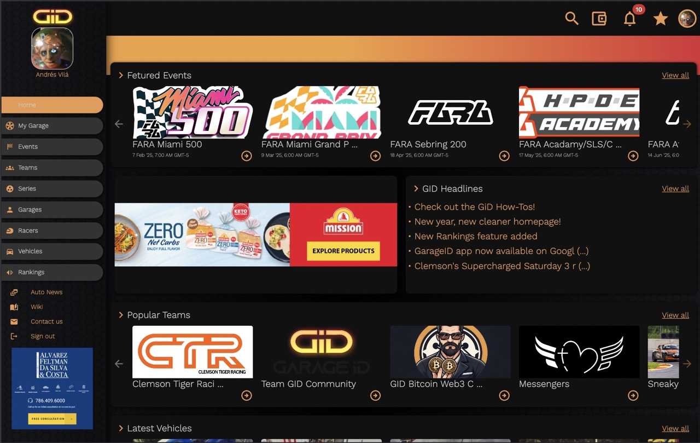
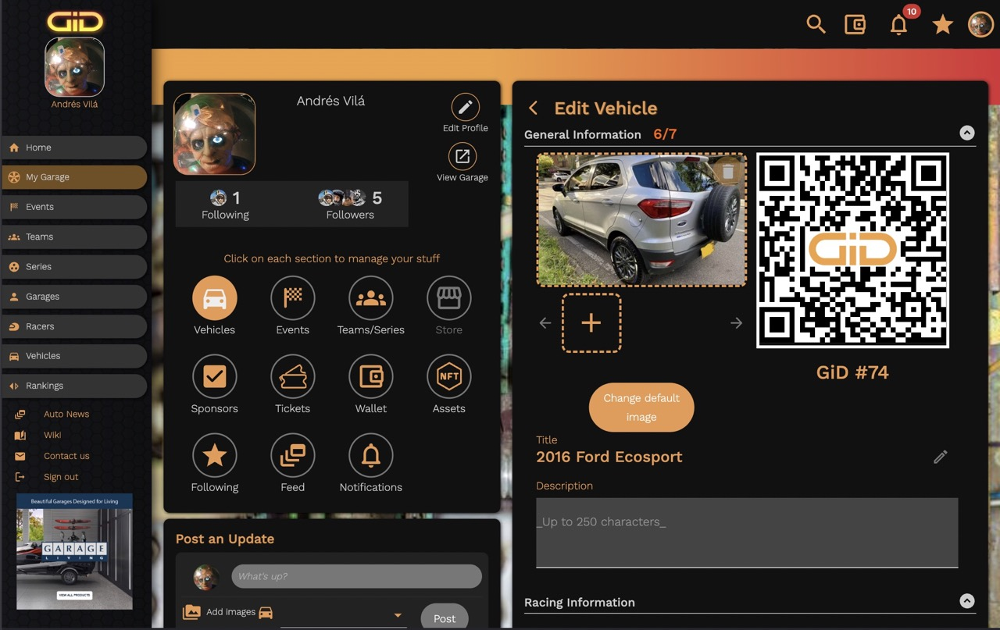
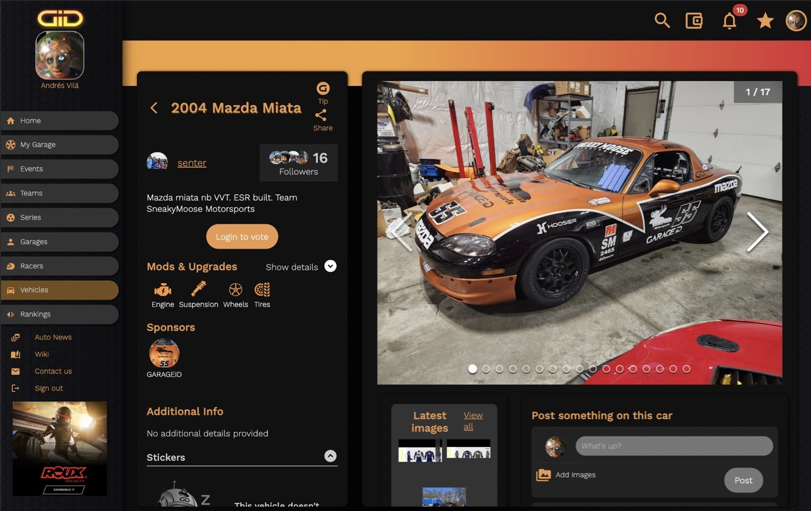

Garage ID
A Community for Car Enthusiasts
GarageID is a revolutionary platform designed to bring car enthusiasts together by showcasing car profiles, managing races, and fostering a vibrant social network. The project began with a bold vision to create a seamless experience for car lovers, and as the lead developer, I was instrumental in turning that vision into reality.
- 
- 
- 
From the initial stages, I spearheaded the development of the app, creating the visual concept, designing the database system, and coding both the front-end and back-end components. This groundwork set the foundation for a robust and scalable platform. As the team grew, I transitioned to focus on front-end development, collaborating with a graphic designer and a back-end developer to refine the app's functionality and enhance the user interface. This collaboration resulted in a dynamic and engaging experience for users.
Key features of GarageID include a comprehensive ticket purchasing system, advanced forms for collecting and validating user data, and social tools that allow users to post text and images, reply, and react to posts. Additionally, I developed sophisticated photo management tools to streamline the uploading, viewing, and manipulation of images, enriching the app's interactive capabilities. By bridging the gap between design and technical implementation, I contributed significantly to UI/UX improvements and optimized data organization strategies for better client-side accessibility.
Explore the app on the official site
You can still find my profile in the About us section